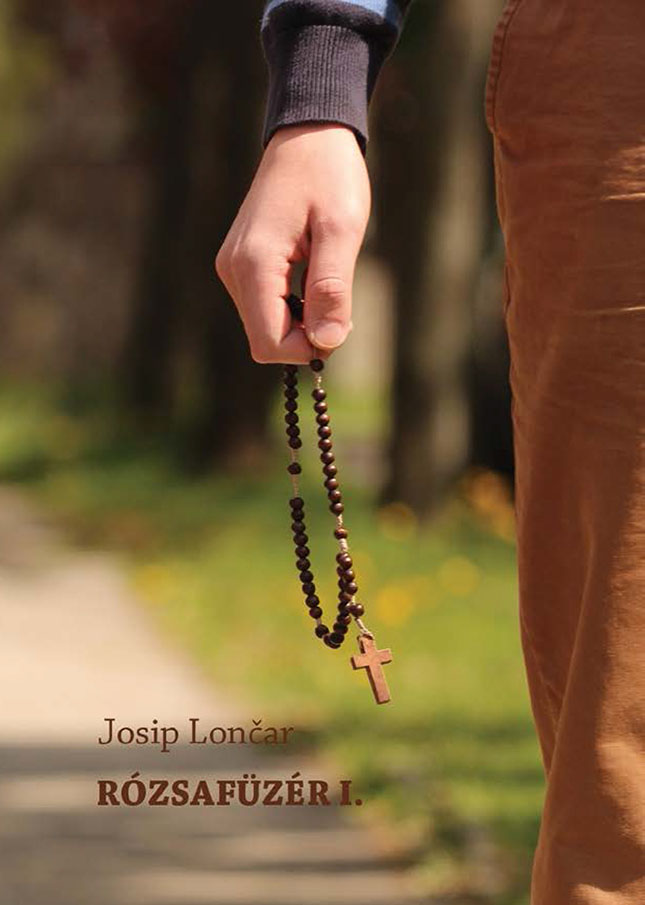
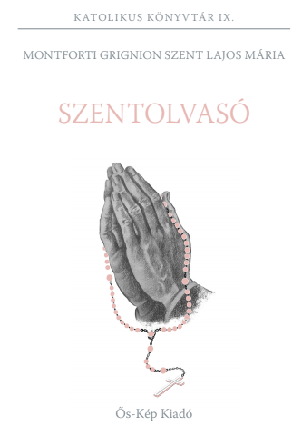

Szentolvasó
- Örvendetes Szentolvasó
- Akit Te Szent Szűz a Szentlélektől fogantál
- Akit Te Szent Szűz Erzsébetet látogatván hordoztál
- Akit Te Szent Szűz a világra szültél
- Akit Te Szent Szűz a Templomban bemutattál
- Akit Te Szent Szűz a Templomban megtaláltál
- Világosság Szentolvasó
- Fájdalmas Szentolvasó
- Dicsőséges Szentolvasó
- A Keresztre: Hiszekegy
- A nagy szemekre: Miatyánk
- A kis szemekre: Üdvözlégy
A tizedek végén pedig az alábbi imádságokat mondjuk:
- A kis szemekre: Üdvözlégy
- A kis szemekre: Üdvözlégy
- A kis szemekre: Üdvözlégy

Könyvek a Szentolvasóról:


A
Catholic Woodworker
honlapja, ahol kézzel készített microcord és paracord, fa Szentolvasók kaphatók.